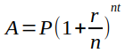

HTLCS:LP3 -- Chapter 2 exercises
2019
Below are exercises from chapter 2 of How to Think Like a Computer Scientist: Learning with Python 3. The bits in italics are from the book; the code is my solutions.
2.14.1 – A simple exercise with variables
Take the sentence: All work and no play makes Jack a dull boy. Store each word in a separate variable, then print out the sentence on one line using print.
# This isn't clever, but it works.
a = "All"
b = "work"
c = "and"
d = "no"
e = "play"
f = "makes"
g = "Jack"
h = "a"
i = "dull"
j = "boy"
print("{} {} {} {} {} {} {} {} {} {}.".format(a, b, c, d, e, f, g, h, i, j))2.14.5 – Compound interest
The formula for computing the final amount if one is earning compound interest is given on Wikipedia as

Where,
- P = principal amount (initial investment)
- r = annual nominal interest rate (as a decimal)
- n = number of times the interest rate is compounded per year
- t = number of years
P = 10000
n = 12
r = .08
print("How many years would you like to let your beautiful $10,000")
t = int(input("investment grow at a rate of 8%, compounded monthly? \n"))
# Executes the formula shown in the exercise.
temp1 = 1 + r / n
A = P * temp1 ** (n * t)
final_statement = "You'll wind up with ${:,} after {} years.".format(
round(A, 2), t
)
print(final_statement)2.14.7, 8 – Modular math with clock time
You look at the clock and it is exactly 2pm. You set an alarm to go off in 51 hours. At what time does the alarm go off? (Hint: you could count on your fingers, but this is not what we’re after. If you are tempted to count on your fingers, change the 51 to 5100.)
Write a Python program to solve the general version of the above problem. Ask the user for the time now (in hours), and ask for the number of hours to wait. Your program should output what the time will be on the clock when the alarm goes off.
In the example problem, we’re asked what time it will be 51 hours from 2 pm. Since we find ourselves at the same time every 24 hours, we’re in the realm of modular math. 51 hours is 2 * 24 + 3 hours, so in 51 hours the time will be the same as it will be three hours after 2 pm. Thus, 5 pm.
That’s easy enough, but if we want to generalize we’re going to need to handle somewhat two more wrinkles. First, there’s a modulo twelve system: e.g. two hours after 11 is 1. Second, we have to keep track of the switches from am to pm and vice versa.
So if we wanted to know, for example, what time is 1000 hours after 2 pm, we’d need to find 1000 modulo 24, which is 16, and then to add 16 hours to 2 pm. This will involve taking a modulo 12. 16 + 2 = 18, and 18 modulo 12 is 6, so it’ll be 6 o’clock at the end of our time. And we’ll need to handle a switch from pm to am.
This all might be easy to do for a human being working on scratch paper, but if we want to turn it into a program we’ll be juggling a fair number of moving parts. And we’ll also need to remember to account for the fact that 12 am is midnight and 12 pm is noon; and we could make a mistake anywhere in that process.
Fortunately, there’s another time system that simplifies things for our purposes: the 24-hour clock, also known as ‘military time’. Civilian time goes through 12 am (midnight), 1 am, 2 am … 10 am, 11 am, 12 pm (noon), 1 pm, 2 pm … 10 pm, 11 pm, and 12 am again. That sequence, in military time, is simply 0, 1, 2, … 10, 11, 12, 13, 14 … 22, 23, and 0 again. If we do our work in military time, it’ll be a lot simpler mathematically.
But we can’t expect our users to give the time in this unfamiliar format. We’ll use military time to do the actual math, but take inputs from the user in ‘ordinary time’, and give outputs in language they can understand.
So we’ll need two functions: one to transform standard inputs that we’ll get from the user to military time, and one to transfer military time back into a form we can hand off to the user.
We can do this like so:
# This program only works if you give it whole numbers of hours,
# both for the current time and the time to wait.
def military_time(hour, ampm):
"""Takes as 'hour' an integer from one to twelve, and as ampm
as the string 'am' or 'pm'. Returns an integer from 0 to 23 representing
the 'military time' equivalent of the 'civilian time' inputs."""
if hour == 12 and ampm == 'am':
return 0
elif hour == 12 and ampm == 'pm':
return 12
elif ampm == 'am':
return hour
elif ampm == 'pm':
return hour + 12
def civilian_time(mt):
"""Takes an integer from 0 through 23, representing a 'military time'.
Returns 'civilian' equivalent."""
if mt == 0:
return "midnight"
elif mt == 12:
return "noon"
elif mt < 12:
return str(mt) + " am"
elif mt > 12:
return str(mt - 12) + " pm"Now that we have these two functions to take time into and out of military form, the math becomes very simple. All we need to do is prompt the user for current time and wait duration, convert to ‘military’ time, do the simple math, convert our answer back out into civilian terms, and print it.
# Get the current time and wait time from the user
print('What time is it now? Please give the time rounded to the nearest')
start_hour = int(input('hour, as a number from 1 to 12. \n'))
start_ampm = input('Is it am or pm? \n')
wait_time = int(input('How many hours will you wait? \n'))
# Convert current time to military time
start_time = military_time(start_hour, start_ampm)
# Do the actual math of finding when the wait ends.
end_time = (start_time + wait_time) % 24
# Format the output for the user and print it
output_time = civilian_time(end_time)
print('You will be finished waiting at {}.'.format(output_time))